Within Dwight, Alhaji and his family reside here.
And he attends Hillhouse High School.
He walks to school along this path every day.
Alhaji only moved to the Dwight neighborhood two years ago, walking to school each day since.
But he’s also learning quite a bit about the past. We met working on a documentary project about the history of and future for his neighborhood.
The first thing Alhaji told me is that there are no parks along his walk to school, and green space arrives only when he arrives to Hillhouse.
Sometimes, Alhaji walks to school — even on the weekends — to get to his favorite greenspace: a soccer field.
Edgewood Park is the largest among these.

In 1996, the Greater Dwight Development Corporation (a neighborhood association) released a 30-year Community Plan.
In the plan, the neighborhood developed an idea for “pocket parks.”
However, only one “pocket park” has been added since the plan’s creation.
Still, the “pocket park” idea is strong, particularly because there are many vacant lots around Alhaji’s walk to school today.
But, stronger implementation is necessary in the future to provide more neighborhood greenspace.
Before and since 1996, the Dwight neighborhood has a history of community planning involvement, such as at charrettes.
This year in 2024, the Greater Dwight Development Corporation is launching the next community planning process for the decades ahead. Neighbors will gather to share hopes and brainstorm ideas for the spaces around them — including green spaces.
As community members who see and experience the same neighborhood every day, young people & their insights — like Alhaji and greenspace — deserve to consistently be
part of the
planning
process for the decades ahead.